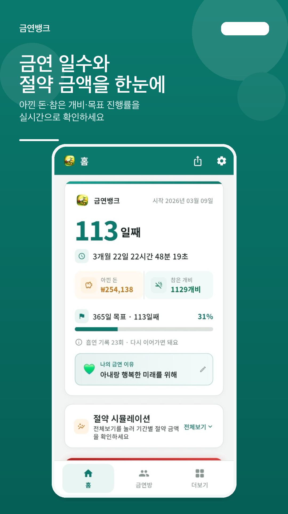
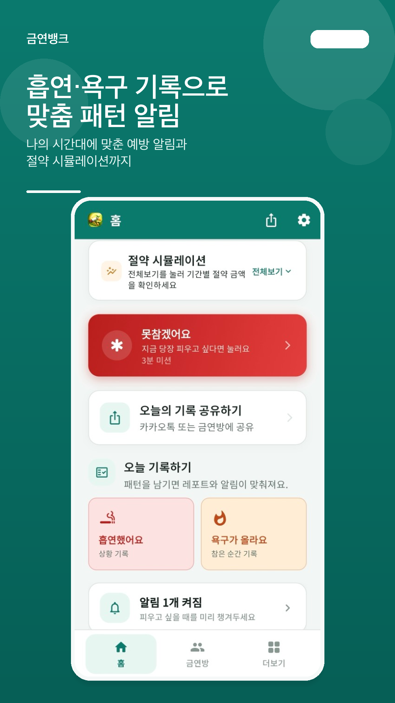
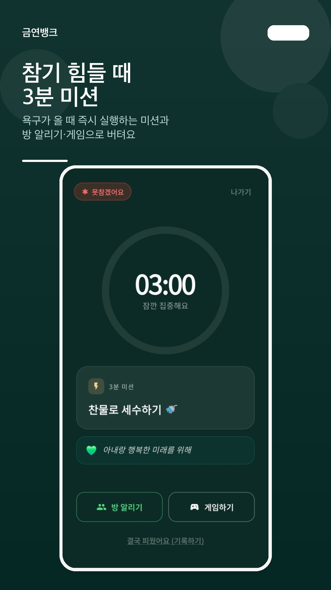
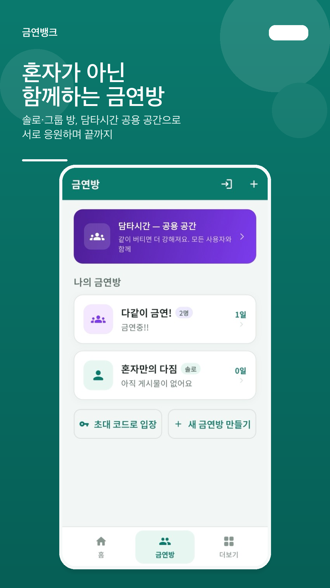
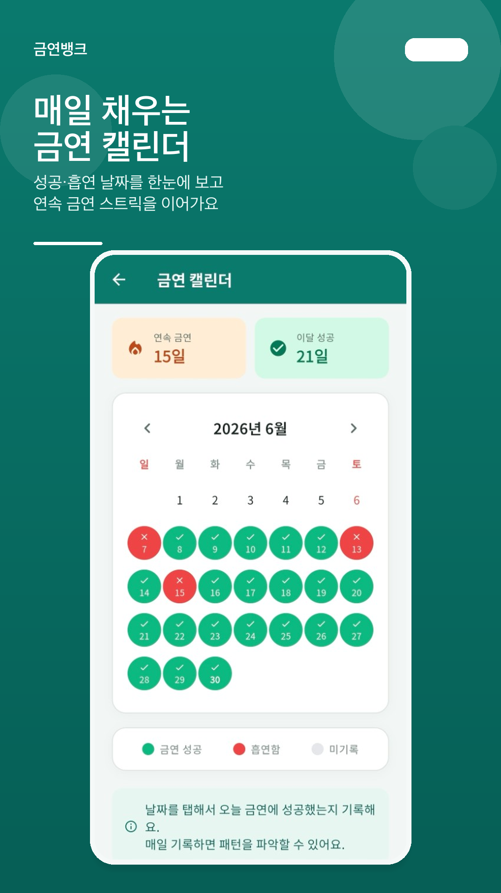
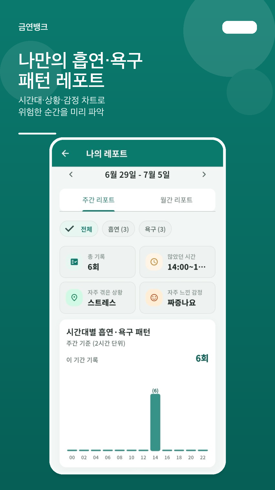
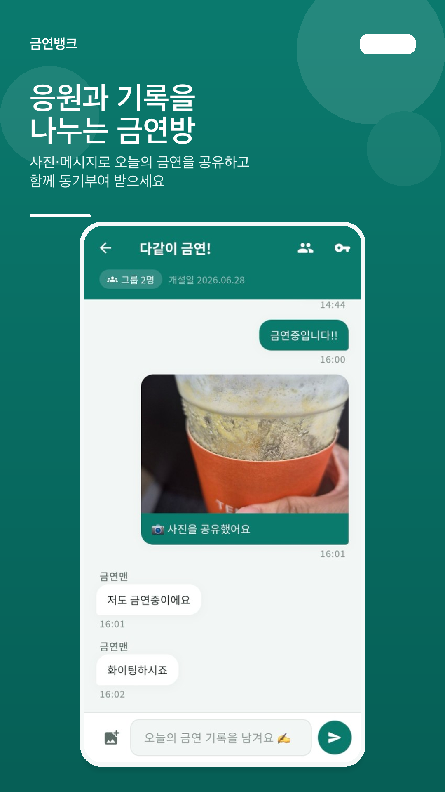

혼자 버티기의 어려움
- 한 번 피우면 전부 포기하고 싶어집니다.
- 언제 위험한지 몰라 같은 실수를 반복합니다.
- 혼자라 동기부여가 금방 식습니다.
Android · iOS · 무료 금연 앱
금연 일수·절약 금액을 한눈에 확인하고, 흡연·욕구 기록으로 나만의 패턴 알림을 받으세요. 금연방·캘린더·레포트로 혼자가 아닌 금연을 이어 갑니다.
로그인 시 기록·알림·설정을 기기 간 동기화할 수 있습니다.

접근 방식
한 번의 흡연이 전체 실패가 아닙니다. 금연뱅크는 기록·알림·함께 버티기로 금연을 일상 루틴으로 만듭니다.
시작 방법
금연 시작일, 목표일, 하루 흡연량·담배값을 설정합니다.
나만의 이유를 저장하고 매일 알림 문구로 받아봅니다.
흡연·욕구를 남기면 패턴 알림이 자동으로 잡힐 수 있습니다.
금연방·3분 미션·레포트로 꾸준히 이어 갑니다.
핵심 기능
금연 일수·시간, 아낀 돈, 참은 개비, 목표 진행률, 절약 시뮬레이션을 한 화면에서 확인합니다.
시간·상황·감정을 남기면 레포트와 패턴 알림 분석에 반영됩니다.
원하는 시간 리마인더와, 기록 기반 자동 패턴 알림으로 위험 시간을 미리 대비합니다.
욕구가 올 때 3분 타이머·즉시 미션·금연방 SOS·미니게임으로 버텁니다.
솔로·그룹 방에서 기록을 공유하고, 공용 공간에서 함께 응원받습니다.
날짜별 성공·흡연 기록과 연속 금연 일수를 한눈에 봅니다.
주간·월간으로 시간대·상황·감정 패턴을 차트로 분석합니다.
건강 회복 타임라인, 금연할 이유, 카카오톡·금연방 공유로 동기를 유지합니다.
앱 화면
실제 앱 화면 기준으로 주요 기능을 소개합니다.
아낀 돈·참은 개비·목표 진행률을 실시간으로

흡연·욕구 기록 → 맞춤 예방 알림

참기 힘들 때 즉시 실행하는 미션

솔로·그룹 방, 담타시간 공용 공간

매일 채우는 성공·흡연 기록

시간대·상황·감정 차트 분석

사진·메시지로 오늘의 금연을 공유하고 응원
금연 흐름
기록하고, 알림 받고, 함께 버티고, 다시 이어갑니다.
FAQ
아닙니다. 금연뱅크는 「다시 이어가는 금연」에 초점을 둡니다. 흡연 기록은 실패 횟수에 반영되지만, 금연 시작 시각부터 이어지는 타이머는 초기화되지 않습니다.
흡연·욕구 기록, 못참겠어요의 「결국 피웠어요」 기록이 최근 30일 안에 3건 이상이면 평균 시간대로 자동 알림이 예약됩니다. 설정에서 끌 수도 있습니다.
혼자 또는 초대 코드로 그룹 방을 만들어 사진·메시지를 공유합니다. 담타시간은 모든 사용자가 함께 쓰는 공용 커뮤니티 공간입니다.
로그인하면 금연 기록·설정·알림 정보 등이 서버와 동기화되어, 기기를 바꿔도 이어서 사용할 수 있습니다.
네. Google Play와 App Store에서 무료로 다운로드할 수 있습니다.
홈(대시보드·기록), 금연방(솔로·그룹·담타시간), 더보기(레포트·캘린더·건강·금연할 이유) 탭으로 구성되어 있습니다.
금연 일수·절약·패턴 알림·금연방·캘린더·레포트까지. 실패해도 다시 이어가는 금연, 지금 시작해 보세요.